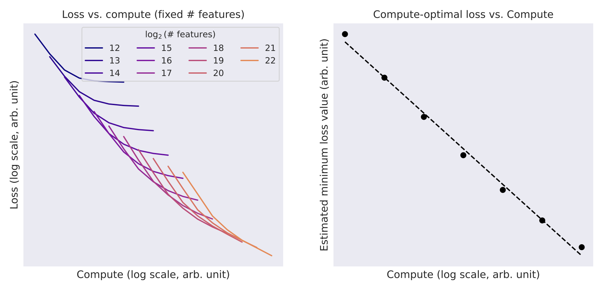

23. Sparse Autoencoder Design
motivating application
optimization objective
learning algorithm
interpreting outputs
Learning Outcomes
- Describe the theoretical foundation of post-hoc explanation methods like SHAP and linear probes values and apply them to realistic case studies with appropriate validation checks
- Analyze large-scale foundation models using methods like sparse autoencoders and describe their relevance to problems of model control and AI-driven design.
- Within a specific application context, evaluate the trade-offs associated with competing interpretable machine learning techniques.
Motivating Case Study
Proteins are the building blocks of cells. Each protein is a sequence of amino acids, and the structure and function of these proteins can be studied using protein language models.
Questions
What are the most important biological features that have been learned by protein language models?
Statistical Formulation
Protein Sequences. One-hot encoded amino acid sequences \(x \in \mathbf{R}^{26 \times T}\). Lengths \(T\) may vary.
Foundation Model \(f\left(x; \theta\right)\). Transforms raw sequence data into representations \(h^{l} = \left(index, feature\right)\) across layers \(l\).
The Polysemanticity Problem
Individual neurons in neural networks respond to multiple unrelated concepts.
For example, a single neuron might activate for: * Arabic script * Genetic sequences * Mathematical notation * Base64 encoded data
This polysemanticity makes interpretation impossible at the neuron level.
Superposition Hypothesis
Linear Representation. Features \(f_1, \ldots, f_F\) are represented as directions \(W_1, \ldots, W_F \in \mathbb{R}^D\): \[x = \sum_{i=1}^F x_{f_i} W_i\] where \(x_{f_i}\) is the activation strength of feature \(i\).
Naive expectation. Can only represent \(F \leq D\) features (one per dimension).
Superposition. When features are sparse (each \(x_{f_i} > 0\) rarely), can represent \(F \gg D\) features.
- Sparsity means most interference terms \(x_{f_i} x_{f_j} \langle W_i, W_j \rangle\) are zero
- Neurons observe \(\langle w_n, x \rangle = \sum_i x_{f_i} \langle w_n, W_i \rangle\) (mixture → polysemanticity)
- Feature directions \(W_i\) are recoverable via sparse dictionary learning
The Dictionary Learning Problem
Given activations \(x \in \mathbf{R}^D\), find:
- Feature directions \(W^{dec} \in \mathbf{R}^{D \times F}\) (the “dictionary atoms”)
- Sparse coefficients \(f(x) \in \mathbf{R}^F\)
Such that: \(x \approx \sum_{i=1}^F f_i(x) W_{\cdot,i}^{dec}\)
Constraint. \(\|f(x)\|_0 \ll F\) (most coefficients are zero)
Sparse Autoencoder Architecture
Model Structure
Encoder. \[f(x) = \text{ReLU}(W^{enc} x + b^{enc})\] where \(W^{enc} \in \mathbf{R}^{F \times D}\)
Decoder. \[\hat{x} = W^{dec} f(x) + b^{dec}\] where \(W^{dec} \in \mathbf{R}^{D \times F}\)
Overcomplete Basis: \(F \gg D\)
Objective Function
\[\mathcal{L} = \mathbf{E}_{x} \left[ \|x - \hat{x}\|_2^2 + \lambda \sum_{i=1}^F f_i(x) \|W_{\cdot,i}^{dec}\|_2 \right]\]
Terms. 1. Reconstruction error 2. Sparsity penalty weighted by atom norm
The weights \(f_{i}\left(x\right)\) replace the usual unit norm constraint.
Soft Thresholding
The encoder \(\text{ReLU}(W^{enc} x + b^{enc})\) approximates the solution to: \[\min_f \frac{1}{2}\|x - W^{dec}f\|_2^2 + \lambda\|f\|_1\]
This is a soft-thresholding operation: \(S_\lambda(v)_i = \text{sign}(v_i) \max(0, |v_i| - \lambda)\)
SAE vs PCA
| Property | PCA | SAE |
|---|---|---|
| Basis | Orthogonal | Overcomplete, non-orthogonal |
| Objective | Maximize variance | Sparse reconstruction |
| Features | Dense | Sparse |
| Semantics | Polysemantic | Monosemantic |
PCA finds directions of variation. SAEs find directions of meaning.
Optimization
Proximal Gradient Methods
When \(f\) is differentiable and \(g\) is convex (not necessarily differentiable), we can solve
\[\min f(x) + g(x)\]
using iterates
\[x^{(k+1)} = \text{prox}_{\eta g} (x^{(k)} - \eta \nabla f(x^{(k)}))\]
For SAEs, \(g = \lambda\|f\|_1\): 1. Gradient step on reconstruction error 2. Soft-threshold to enforce sparsity: \(\text{prox}_{\lambda\eta}(v) = S_{\lambda\eta}(v)\)
FISTA (Fast Iterative Soft-Thresholding)
Achieves optimal \(O(1/k^2)\) convergence via momentum:
- \(f^{(k)} = S_{\lambda/L} (y^{(k)} - \frac{1}{L} \nabla_f \|x - W^{dec}f\|_2^2|_{f=y^{(k)}})\)
- \(t_{k+1} = \frac{1 + \sqrt{1 + 4t_k^2}}{2}\)
- \(y^{(k+1)} = f^{(k)} + \frac{t_k - 1}{t_{k+1}} (f^{(k)} - f^{(k-1)})\)
Experimental Setup
Model. Claude 3 Sonnet (middle layer residual stream)
Dictionary sizes. 1M, 4M, 34M features
Training. * Data: Mix similar to pretraining (The Pile, Common Crawl) * No RLHF-style dialogue data * Single epoch
Dead features. 2% (1M), 35% (4M), 65% (34M)
Hyperparameter Tuning
Observe empirical scaling laws.

Interpreting Outputs
The Learned Dictionary
Columns \(W_{\cdot,i}^{dec}\) are feature directions in activation space
Coefficients \(f_i(x)\) indicate strength of feature \(i\) for input \(x\)
For Claude 3 Sonnet (34M SAE features):
- Average \(L_0 < 300\) active features per token
- Reconstruction explains 65% of variance
Visualization Method
For each feature \(i\):
- Compute \(f_i(x)\) over dataset
- Collect top-\(k\) examples by activation strength
- Inspect contexts where feature fires
What concept consistently appears in high-activation contexts?
Feature Examples
We’ll go over these in detail next lecture.
Golden Gate Bridge (34M/31164353): * Descriptions in multiple languages * Images of the bridge * Related SF landmarks (weaker)
Immunology (1M/533737): * Neighborhood includes immunodeficiency, vaccines, organ systems * Separate cluster for legal immunity
Exercise: Implement FISTA
Given \(x \in \mathbf{R}^D\), \(W^{dec} \in \mathbf{R}^{D \times F}\), \(\lambda > 0\):
Implement FISTA to solve: \[\min_f \frac{1}{2}\|x - W^{dec}f\|_2^2 + \lambda\|f\|_1\]
Compare convergence rate to standard ISTA.